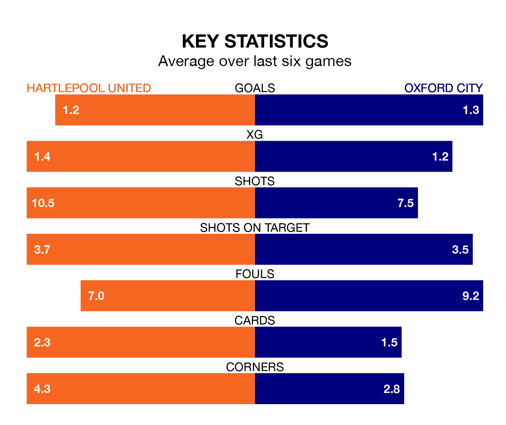

Hartlepool United are heavy favourites to keep all three points at home in Saturday's kick-off against Oxford City.
Pools, who sit 18th in National League with 26 games played, are priced at 1.6 to seal victory at the Suit Direct Stadium.
Sitting three places and four points behind them in the table, Oxford are 4.8 to win with *Betting Company*, while the draw is at 4.2.
Hartlepool are in terrible form in National League, with no wins and two draws from their last six games.
With a win and a draw over that period, Oxford's form is slightly better – they have taken four points from 18, compared to United's two.
With 41 goals in 26 games so far this season, Pools are scoring more than average in the league with 1.6 goals per game. But they are conceding more than average too, letting in 52 goals at a rate of 2.0 per game.
City, meanwhile, are below average scorers, with 1.4 goals per game, compared to a league average of 1.5. They have conceded 1.9 goals per game.
In Emmanuel Dieseruvwe, the home team have one of the league's sharpest shooters so far this season. He has notched 13 goals in 23 appearances, to sit fourth in the scoring charts.
The visitors' top scorers, with nine goals each, are Oliver Sanderson and Josh Parker.
Hartlepool's last match was on December 30, a 2-0 loss against Oldham Athletic.
Oxford lost 2-1 against Dorking Wanderers last time out, on Monday, with Sanderson on the scoresheet.
Updated: 10:36, 03/01/24